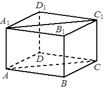

Авторский разбор и аудит предварительны; внешней экспертизы нет.
Модель автора: claude-opus-5-5 (opus; effort=low); в основных частотах: True ·
Впишите правильный ответ.
| В прямоугольном параллелепипеде известно, что , , . Найдите объём многогранника, вершинами которого являются точки A, B, C, A1, B1, C1. |  |
КЭС: 7.3 Многогранники
105
| ID / вход | Действие | Результат | Локальные KC |
|---|---|---|---|
| S1 · condition | Определить многогранник ABCA1B1C1 как прямую треугольную призму, отсекаемую от прямоугольного параллелепипеда плоскостью ACC1A1, с основанием ABC и боковым ребром AA1, перпендикулярным основанию | ABCA1B1C1 — прямая призма с основанием ABC и высотой AA1 = 5 | KC1 |
| S2 · condition, S1 | Вычислить площадь прямоугольного треугольника ABC (угол B прямой) как половину произведения катетов AB и BC | S(ABC) = 7·6/2 = 21 | KC2 |
| S3 · S1, S2 | Вычислить объём призмы как произведение площади основания на высоту | V = 21·5 = 105 | KC3 |
[
{
"id": "M1",
"name": "Объём части параллелепипеда как прямой призмы: определить призму, найти площадь основания, умножить на высоту",
"step_ids": [
"S1",
"S2",
"S3"
]
}
]По списку вершин, выбранных среди вершин известного многогранника, определить тип получившегося тела (например, призма или пирамида), его основание и высоту, используя свойства исходного многогранника (перпендикулярность рёбер, параллельность граней).
{
"local_kc_id": "KC1",
"status": "uncertain",
"catalog_kc_id": null,
"evidence": [
{
"ref": "step:S1:action",
"quote": "Определить многогранник ABCA1B1C1 как прямую треугольную призму, отсекаемую от прямоугольного параллелепипеда плоскостью ACC1A1, с основанием ABC и боковым ребром AA1, перпендикулярным основанию"
},
{
"ref": "step:S1:result",
"quote": "ABCA1B1C1 — прямая призма с основанием ABC и высотой AA1 = 5"
},
{
"ref": "image:assets/ce03de60714763e9b695cb2c.png",
"region_description": "Прямоугольный параллелепипед: нижнее основание ABCD, верхнее A1B1C1D1, вертикальные рёбра AA1, BB1, CC1, DD1; в верхней грани проведена диагональ A1C1; диагональ AC нижнего основания не проведена"
}
],
"context_refs": [
"condition",
"image:assets/ce03de60714763e9b695cb2c.png"
],
"alternatives_checked": [
{
"catalog_kc_id": "literal_0cd75b4548b3",
"reason": "Покрывает распознавание призмы по двум параллельным равным основаниям и направлению боковых рёбер, что наблюдается в S1; но кандидат KC1 шире: общий выбор типа тела (призма или пирамида) по набору вершин и определение высоты через перпендикулярность рёбер. Граница между узким KC каталога и составным кандидатом неоднозначна"
},
{
"catalog_kc_id": "literal_6f2cb1731d16",
"reason": "Касается типа сечения плоскостью по пересечённым рёбрам, а не типа тела по набору вершин"
},
{
"catalog_kc_id": "pyramid_volume",
"reason": "Вычисление объёма пирамиды, не распознавание тела"
}
],
"rationale": "В S1 наблюдается распознавание прямой треугольной призмы ABCA1B1C1 с основаниями ABC и A1B1C1 и боковым ребром AA1 как высотой. Это действие близко к literal_0cd75b4548b3, но авторский кандидат сформулирован как общее распознавание любого тела по вершинам с определением основания и высоты; включение установления высоты (перпендикулярность AA1 основанию) выходит за определение каталога. Полное совпадение не подтверждено; возможна трактовка как match к literal_0cd75b4548b3 при сужении кандидата до призмы.",
"proposal": null,
"blocking": false,
"issue_ids": [
"i1"
]
}Если в треугольнике известны длины двух сторон, образующих прямой угол, найти площадь как половину их произведения; применимо только при подтверждённом прямом угле между этими сторонами.
{
"local_kc_id": "KC2",
"status": "match",
"catalog_kc_id": "right_triangle_area",
"evidence": [
{
"ref": "step:S2:action",
"quote": "Вычислить площадь прямоугольного треугольника ABC (угол B прямой) как половину произведения катетов AB и BC"
},
{
"ref": "step:S2:result",
"quote": "S(ABC) = 7·6/2 = 21"
}
],
"context_refs": [
"condition"
],
"alternatives_checked": [],
"rationale": "Операция — половина произведения катетов AB=7 и BC=6 при прямом угле B (следует из того, что ABCD — прямоугольник основания прямоугольного параллелепипеда). Распознавание прямого угла по определению узла отдельно и здесь взято из условия. Других близких узлов площади в каталоге нет.",
"proposal": null,
"blocking": false,
"issue_ids": []
}По площади основания и высоте призмы (расстоянию между плоскостями оснований) найти объём как их произведение; для прямой призмы высота равна боковому ребру.
{
"local_kc_id": "KC3",
"status": "match",
"catalog_kc_id": "literal_19971b364ca1",
"evidence": [
{
"ref": "step:S3:action",
"quote": "Вычислить объём призмы как произведение площади основания на высоту"
},
{
"ref": "step:S3:result",
"quote": "V = 21·5 = 105"
}
],
"context_refs": [
"step:S1:result",
"step:S2:result"
],
"alternatives_checked": [
{
"catalog_kc_id": "pyramid_volume",
"reason": "Тело — призма, множитель 1/3 не применяется"
}
],
"rationale": "Объём призмы как произведение площади основания 21 на перпендикулярную высоту AA1=5 (прямая призма, высота установлена в S1). Полностью соответствует определению узла. Ответ 105 = половина объёма параллелепипеда 7·6·5=210, что согласуется.",
"proposal": null,
"blocking": false,
"issue_ids": []
}[]
[
{
"id": "i1",
"kind": "boundary",
"refs": [
"step:S1:action"
],
"description": "Кандидат KC1 объединяет выбор типа тела (призма/пирамида) по набору вершин и установление высоты; каталожный literal_0cd75b4548b3 охватывает только распознавание призмы по основаниям и рёбрам. Граница не позволяет подтвердить match.",
"blocking": false,
"affected_local_kc_ids": [
"KC1"
]
}
]{
"author_path": "data/annotation/runs/2026-11-09-fipi-team-bogdan108-next-100/raw/author/B1EBED.json",
"auditor_path": "data/annotation/runs/2026-11-09-fipi-team-bogdan108-next-100/raw/auditor/B1EBED.json",
"accepted_after_review": null
}